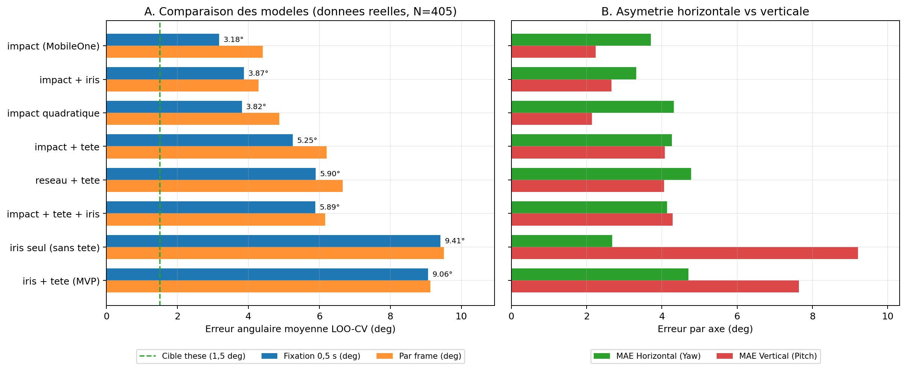
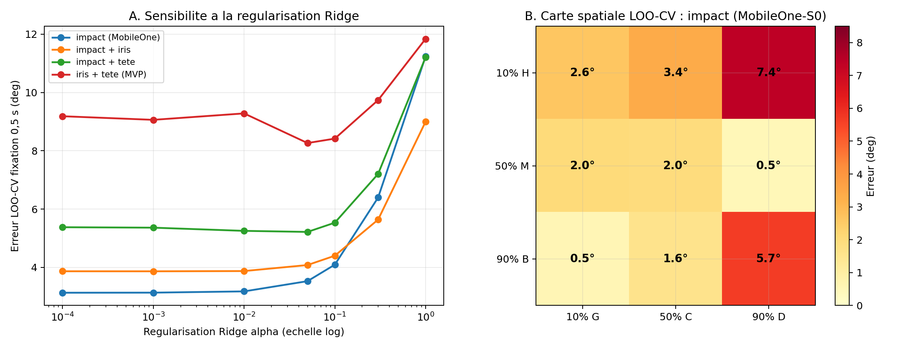
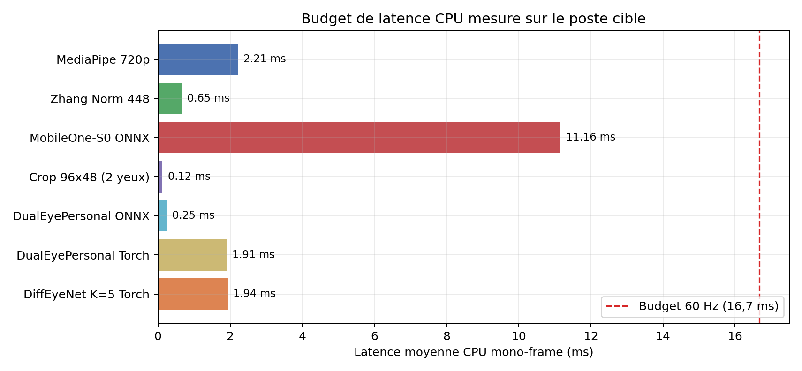
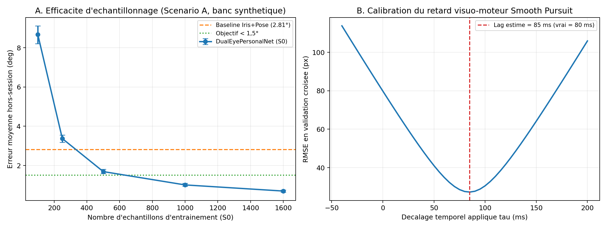
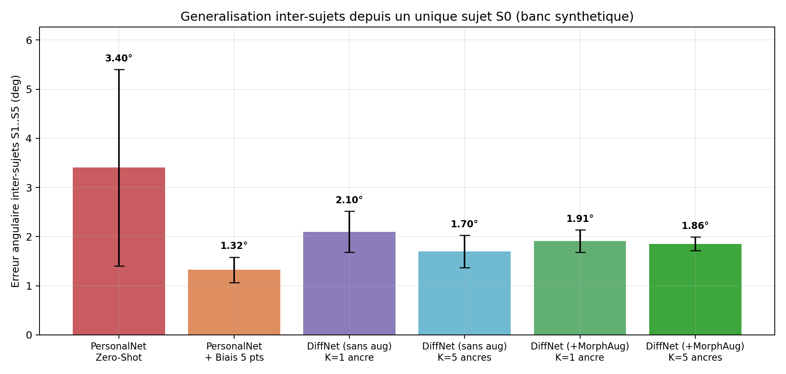

Dossier de Recherche Expérimentale & Monographie Technique — Projet Eyetrack
Dossier de recherche expérimentale et monographie technique — Projet Eyetrack
---
L'estimation du regard par webcam RGB grand public se heurte simultanément à deux verrous : un plafond de précision pratique autour de $3^\circ\text{--}4{,}5^\circ$ (dû notamment à la variabilité inter-individuelle de l'angle $\kappa$ et au couplage tête–œil) et une dépendance quasi universelle aux jeux de données publics sous licence strictement non commerciale (Gaze360, ETH-XGaze, MPIIFaceGaze, GazeCapture). Lorsque l'auteur d'un système ne dispose que de sa propre personne pour acquérir des données, ce régime mono-sujet pose deux problèmes symétriques : (A) comment exploiter l'identité unique pour descendre sous le seuil de $1{,}5^\circ$ en temps réel sur CPU, et (B) comment apprendre malgré tout un modèle distribuable généralisant à des utilisateurs inédits ?
Ce dossier formalise, implémente et évalue expérimentalement une réponse unifiée sur la base du tracker Eyetrack. L'audit de la baseline réelle ($N = 405$ captures calibrées sur écran $2560 \times 1440$ à $60\text{ cm}$ avec verres correcteurs) révèle une erreur LOO-CV de $3{,}18^\circ$ en fixation ($4{,}40^\circ$ par image) et une latence de $11{,}16\text{ ms}$ pour le réseau plein-visage MobileOne-S0. Nous proposons : (1) un pipeline d'auto-collecte continue combinant poursuite oculaire lisse (Smooth Pursuit) compensée du retard visuo-moteur $\hat{\tau}_{\text{lag}}$ et capture passive pré-saccadique sur clics souris, (2) l'architecture légère DualEyePersonalNet ($70{,}5\text{ k}$ paramètres, patchs binoculaires alignés $48 \times 96$ avec CoordConv2d et pose 6DoF, $0{,}25\text{ ms}$ en ONNX CPU), et (3) l'architecture siamoise antisymétrique DifferentialEyeNet ($66{,}8\text{ k}$ paramètres) entraînée par paires différentielles en luminance normalisée avec randomisation morphologique des paupières pour le transfert inter-sujets $K$-ancres.
---
Consumer RGB webcam gaze tracking faces two simultaneous barriers: a practical accuracy ceiling around $3^\circ\text{--}4.5^\circ$ (driven by inter-subject $\kappa$-angle variability and head–eye coupling) and near-universal reliance on non-commercial public datasets (Gaze360, ETH-XGaze, MPIIFaceGaze, GazeCapture). When a single developer can only record their own face, this single-subject regime poses a dual scientific challenge: (A) how to leverage mono-identity training to break the $1.5^\circ$ barrier in real time on CPU, and (B) how to nonetheless learn a distributable model that generalizes to unseen users?
This research monograph formalizes, implements, and empirically evaluates a unified architecture built upon the Eyetrack system. Auditing the real human baseline ($N = 405$ calibrated samples on a $2560 \times 1440$ display at $60\text{ cm}$ with eyeglasses) yields $3.18^\circ$ fixation LOO-CV error ($4.40^\circ$ per frame) and $11.16\text{ ms}$ CPU inference latency for full-face MobileOne-S0. We introduce: (1) a solo collection suite combining visuomotor-lag-compensated Smooth Pursuit and pre-saccadic passive mouse-click buffering, (2) DualEyePersonalNet ($70.5\text{k}$ parameters on $48 \times 96$ aligned binocular eye crops with CoordConv2d and 6DoF pose, $0.25\text{ ms}$ ONNX CPU), and (3) DifferentialEyeNet ($66.8\text{k}$ parameters), a structurally antisymmetric Siamese model trained on normalized grayscale eye pairs with morphological eyelid randomization for $K$-anchor cross-subject transfer.
---
| Symbole | Signification | Unité / Domaine |
|---|---|---|
| $K \in \mathbb{R}^{3\times 3}$ | Matrice intrinsèque estimée de la webcam | $\text{px}$ |
| $R_{\text{norm}} \in SO(3)$ | Rotation de la caméra virtuelle canonique (Zhang 2018) | sans dimension |
| $\mathbf{o}_{3\text{D}} \in \mathbb{R}^3$ | Origine 3D estimée du centre facial/oculaire (repère caméra) | $\text{mm}$ |
| $D_{\text{iris}}$ | Diamètre anatomique moyen de l'iris humain ($11{,}7$) | $\text{mm}$ |
| $(\psi, \theta, \phi)$ | Angles d'Euler intrinsèques de la tête (yaw, pitch, roll) | $\text{deg}$ |
| $\kappa$ | Écart angulaire individuel entre axe optique et axe visuel | $\text{deg}$ |
| $(I_L, I_R)$ | Patchs oculaires alignés ($48 \times 96$) gauche et droit | $\text{uint8} / \mathbb{R}$ |
| $\tau_{\text{lag}}$ | Retard visuo-moteur en poursuite lisse | $\text{ms}$ |
| $\alpha, \lambda$ | Paramètre Ridge et facteur d'oubli RLS | sans dimension |
| $\varepsilon_{\text{vis}}$ | Erreur angulaire visuelle 3D exacte depuis $\mathbf{o}_{3\text{D}}$ | $\text{deg}$ |
---
| Chapitre | Objet scientifique | Modules / Artefacts associés |
|---|---|---|
| Chapitre 1 | Problématique, limites existantes, hypothèses $H_1$–$H_3$ | README.md, docs/these/01_introduction_problematique.md |
| Chapitre 2 | État de l'art critique (2014–2026), SOTA, licences & brevets | docs/etat_de_l_art.md, references.bib |
| Chapitre 3 | Formalisme mathématique complet d'Eyetrack | face.py, normalize.py, gaze_model.py, geometry.py, calibration.py, filters.py |
| Chapitre 4 | Protocoles d'acquisition solo (Smooth Pursuit, clics, anti-fuite) | research/eye_crop.py, research/lag_estimation.py, research/collect_pursuit.py, research/collect_clicks.py |
| Chapitre 5 | Architectures DualEyePersonalNet (A) et DifferentialEyeNet (B) | research/models.py, research/augmentations.py, research/train.py |
| Chapitre 6 | Résultats expérimentaux, ablations, statistiques et latence CPU | research/analyze_existing_data.py, research/run_synthetic_ablations.py, research/evaluate.py |
| Chapitre 7 | Discussion critique, menaces à la validité et feuille de route | docs/these/07_discussion_limites_et_perspectives.md |
Le suivi du regard (eye tracking) et de la posture crânienne (head tracking à six degrés de liberté, 6DoF) constitue une modalité d'interaction homme-machine majeure dans la simulation aéronautique et automobile, l'accessibilité, l'ergonomie cognitive et la réalité étendue. Historiquement, les solutions de précision inférieure au degré angulaire reposent sur des capteurs infrarouges actifs exploitant le principe PCCR (Pupil Center Corneal Reflection), tels que les systèmes Tobii (environ $0{,}67^\circ$ à $< 1^\circ$ en conditions contrôlées). Cette précision matérielle s'accompagne toutefois d'un coût dédié, d'une sensibilité extérieure aux rayons infrarouges solaires et d'une absence d'ubiquité sur les postes bureautiques existants.
À l'inverse, l'estimation du regard par simple webcam RGB grand public (par exemple une Logitech C920 à $1280 \times 720$ ou $1920 \times 1080$ pixels) démocratise l'accès au suivi oculo-céphalique. En pratique, l'état de l'art commercial (Eyeware Beam, fondé sur la lignée scientifique EPFL/Idiap) revendique $1{,}5^\circ$ dans des conditions idéales après calibration à 5 points, tandis que les évaluations académiques indépendantes placent la majorité des trackers webcam non contrôlés entre $2{,}3^\circ$ et $4{,}5^\circ$.
Au-delà de la barre algorithmique, l'écosystème du deep learning appliqué au regard souffre d'un verrou structurel et juridique souvent ignoré : la quasi-totalité des grands jeux de données publics de référence — MPIIGaze / MPIIFaceGaze, GazeCapture, ETH-XGaze, Gaze360, EYEDIAP et EVE — sont distribués sous licence strictement non commerciale (CC BY-NC-SA ou accords académiques restrictifs). Or, dès qu'un modèle neuronal est entraîné sur ces données, ses poids héritent généralement de la restriction non commerciale, empêchant toute distribution libre ou commerciale d'un logiciel autonome, comme nous avons dû l'appliquer dans la conception même du projet Eyetrack (téléchargement séparé et optionnel de mobileone_s0_gaze.onnx).
EyetrackLe projet logiciel Eyetrack implémente déjà un pipeline modulaire complet temps réel vers OpenTrack (UDP 120 Hz) combinant :
face.py) ;normalize.py, focale virtuelle calibrée expérimentalement à $1900\text{ px}$ sur patch $448 \times 448$) ;MobileOne-S0 (ONNX, entraîné sur Gaze360) et ratios géométriques iriens (gaze_model.py), projetés sur le plan écran (geometry.py) ;calibration.py) ;filters.py).L'audit empirique de cette architecture de référence sur des données réelles capturées avec verres correcteurs ($N = 405$ échantillons, écran $2560 \times 1440$ de $27''$ à $60\text{ cm}$, diamètre irien médian de $20{,}5\text{ px}$) met en évidence trois limitations fondamentales :
MobileOne-S0 à résolution $448 \times 448$ consomme à elle seule $11{,}16\text{ ms}$ en moyenne sur CPU ($p_{95} = 12{,}81\text{ ms}$), occupant environ $67\,\%$ du budget temps réel à $60\text{ Hz}$ ($16{,}67\text{ ms}$).Ce dossier de recherche pose la problématique unifiée suivante :
Problématique centrale : Comment concevoir, collecter et entraîner un système d'estimation du regard monoculaire RGB temps réel sur CPU lorsque l'on ne dispose que d'un seul sujet humain (l'auteur du système), tout en répondant simultanément à deux régimes antagonistes : l'hyper-personnalisation sous-1,5° (Scénario A) et la généralisation inter-sujets distribuable sans poids non commerciaux (Scénario B) ?
Nous formulons trois hypothèses scientifiques testables :
CoordConv) et fusionnés avec un vecteur géométrique 6DoF réduit la latence d'inférence d'un facteur $> 30\times$ sur CPU tout en empêchant la mémorisation de l'arrière-plan, ouvrant l'accès au régime $< 1{,}5^\circ$ spécifique à l'utilisateur.Les travaux présentés dans ce dossier apportent les contributions suivantes :
research/collect_pursuit.py, research/collect_clicks.py, research/lag_estimation.py, research/eye_crop.py) intégrant alignement binoculaire $96 \times 48$, estimation du lag par validation croisée temporelle et tampon circulaire pré-clic.DualEyePersonalNet (Scénario A) et DifferentialEyeNet (Scénario B), évaluées sur banc paramétrique contrôlé multi-sujets et prêtes pour la campagne d'acquisition webcam multi-sessions.Ce chapitre synthétise l'évolution scientifique de l'estimation du regard monoculaire sans éclairage infrarouge (appearance-based et hybride), en mettant en regard les avancées architecturales, le goulot d'étranglement de la généralisation de domaine, les méthodes de calibration peu coûteuses en annotations (few-shot et implicite) et les contraintes juridiques de distribution.
Trois paradigmes structurent la littérature du suivi oculaire distant :
Les trackers infrarouges dédiés (Tobii T60 à $0{,}67^\circ$ selon Skovsgaard et al., 2011 ; Tobii 4C $< 1^\circ$) exploitent le principe actif PCCR (Pupil Center Corneal Reflection) : des diodes infrarouges créent un ou plusieurs reflets cornéens (images de Purkinje) stables vis-à-vis de l'axe optique, permettant de trianguler l'orientation du globe indépendamment des translations de tête.
En lumière visible pure (webcam RGB), deux voies géométriques existent :
GazeTracking, ou le mode iris d'Eyetrack basé sur les 478 points MediaPipe) : le centre irien est rapporté aux commissures externe/interne et aux bords palpébraux. Si la détection requiert peu de calcul ($< 0{,}01\text{ ms}$ post-landmarks), un iris à $60\text{ cm}$ en 720p ne mesure qu'environ $20\text{ px}$ (ou $\sim 10\text{ px}$ en 480p), rendant le rapport vertical particulièrement vulnérable aux clignements, aux occlusions palpébrales lors du regard vers le bas et aux variations de pose de tête.Les réseaux profonds apprennent directement une fonction $f_\theta : I \mapsto \mathbf{g}$ :
yakhyo/gaze-estimation) transpose ce principe sur des backbones mobiles dont MobileOne-S0 ($4{,}8\text{ Mo}$ ONNX, $12{,}58^\circ$ sur Gaze360).Proposée par Sugano et al. (CVPR 2014) et formalisée par Zhang et al. (ETRA 2018), la normalisation géométrique des données ramène chaque visage dans le repère d'une caméra virtuelle canonique pointée vers le centre facial à distance constante ($600\text{ mm}$), l'axe horizontal aligné sur les yeux. La révision de 2018 montre qu'en ne transformant le vecteur de regard que par la rotation pure $R_{\text{norm}}$ (sans appliquer la matrice d'échelle $S$ au vecteur directionnel), la précision s'améliore nettement.
On distingue deux paramétrisations de sortie (Cheng et al., TPAMI 2024) :
| Modèle / Travail | MPIIFaceGaze / MPIIGaze | EYEDIAP | Gaze360 | Remarque méthodologique |
|---|---|---|---|---|
| FullFace (Zhang et al., 2017) | $4{,}80^\circ$ | — | — | Visage complet, pondération spatiale |
| Gaze360 (Kellnhofer et al., 2019) | $4{,}06^\circ$ | $5{,}36^\circ$ | $11{,}04^\circ$ | LSTM 7 frames + incertitude |
| CA-Net (Cheng et al., 2020) | $4{,}10^\circ$ | $5{,}27^\circ$ | $12{,}26^\circ$ | Raffinement visage $\to$ yeux |
| GazeTR-Hybrid (Cheng & Lu, 2022) | $4{,}00^\circ$ | $5{,}17^\circ$ | $10{,}62^\circ$ | Hybride CNN + Transformer ($11{,}4\text{ M}$ params) |
| L2CS-Net (Abdelrahman et al., 2022) | $3{,}92^\circ$ | — | $10{,}41^\circ$ | Classification discrétisée + régression |
| OmniGaze (Qu et al., NeurIPS 2025) | $2{,}97^\circ$ | $4{,}07^\circ$ | $9{,}12^\circ$ | Semi-supervisé, pseudo-labels + reward MLLM |
| ETH-XGaze baseline (cross depuis XGaze) | $7{,}5^\circ$ | $11{,}0^\circ$ | $27{,}3^\circ$ | Effondrement hors domaine |
| UniGaze-H (Qin et al., WACV 2026, LODO) | $4{,}51^\circ$ | $5{,}88^\circ$ | $12{,}37^\circ$ | ViT-H ($632\text{ M}$ params), pré-entraînement MAE $1{,}6\text{ M}$ |
Deux résultats récents orientent directement notre conception :
La limite fondamentale d'un modèle générique non calibré provient de l'angle kappa ($\kappa$), l'écart anatomique individuel entre l'axe optique du globe (centré sur la pupille/iris) et l'axe visuel passant par la fovéa. Cet angle varie typiquement jusqu'à $\pm 5^\circ$ selon les individus et ne peut être observé sur une image externe sans calibration.
Trois familles de solutions adressent ce verrou :
Pour la restitution interactive, Casiez et al. (CHI 2012) introduisent le filtre One Euro ($1\text{€}$), un passe-bas du premier ordre dont la fréquence de coupure croît linéairement avec la vitesse estimée du signal. Ce mécanisme supprime les micro-oscillations pendant les fixations tout en préservant la réactivité lors des saccades oculaires. En revanche, comme l'implémentation d'Eyetrack l'a mis en évidence (filters.py), des pics isolés d'erreur neuronale ouvrent artificiellement la bande passante du filtre One Euro via la dérivée estimée — justifiant l'insertion préalable d'un court filtre médian ($w=3$).
| Ressource | Volume | Licence | Usage commercial |
|---|---|---|---|
| MPIIGaze / MPIIFaceGaze | 15 sujets, ~45k visages | CC BY-NC-SA 4.0 | Non |
| GazeCapture | 1 474 sujets, ~2M frames | Research purposes only | Non |
| ETH-XGaze | 110 sujets, $>1\text{M}$ images | CC BY-NC-SA 4.0 | Non |
| Gaze360 | 238 sujets, ~172k images | Non-commercial research only | Non |
| EYEDIAP | 16 sujets, RGB + RGB-D | EULA non commercial | Non |
| EVE | 54 sujets, $>12\text{M}$ frames | CC BY-NC-SA 4.0 (code MIT) | Non |
| UniGaze (poids) | ViT B/L/H | ModelGo MG-NC-RAI-2.0 | Non |
| MediaPipe FaceLandmarker | 478 landmarks | Apache 2.0 | Oui |
Parallèlement, les brevets EPFL/Idiap et Eyeware Tech SA (EP3154407B1, EP3953859B1 sur l'estimation de paramètres géométriques oculaires personnels, WO2022084803A1 sur l'auto-calibration) soulignent l'intérêt scientifique et industriel d'une architecture entièrement entraînée sur données propriétaires ou permissives sans réutilisation de poids non commerciaux.
C'est précisément ce double constat — nécessité de personnalisation sous-$1{,}5^\circ$ (Scénario A) et contrainte d'indépendance vis-à-vis des datasets NC lorsqu'on ne dispose que d'un seul sujet (Scénario B) — qui fonde les contributions développées dans les chapitres suivants.
EyetrackCe chapitre formalise rigoureusement chaque étape géométrique, statistique et algorithmique implémentée dans la plateforme de base Eyetrack (face.py, normalize.py, gaze_model.py, geometry.py, calibration.py, filters.py), en précisant les repères de coordonnées et les conventions d'orientation vérifiés par la suite de tests unitaires.
Soit une image webcam acquise au format $W \times H$ (typiquement $1280 \times 720$ en flux MJPG à $30\text{--}60\text{ Hz}$). MediaPipe FaceLandmarker extrait un ensemble de 478 points caractéristiques $\mathbf{p}_i = (u_i, v_i)^\top \in \mathbb{R}^2$ (dont les contours iriens et centres $\mathbf{p}_{468}, \mathbf{p}_{473}$) ainsi qu'une matrice de transformation rigide $M_{\text{MP}} \in \mathbb{R}^{4\times 4}$.
Pour éliminer toute composante d'échelle résiduelle dans la sous-matrice $M_{3\times 3}$, la rotation pure est obtenue par décomposition en valeurs singulières (face.py:pose_from_matrix) :
Contrairement à une décomposition $X$-$Y$-$Z$ classique (type cv2.RQDecomp3x3), qui induit un couplage parasite (cross-talk) entre lacet et tangage dès que la tête pivote (ex. $+40^\circ$ en yaw puis $+15^\circ$ en roll créant un faux pitch), la factorisation dans l'ordre intrinsèque OpenTrack $R = R_y(\psi) R_x(\theta) R_z(\phi)$ garantit l'indépendance des axes :
La translation $\mathbf{t}_{\text{cm}} = (M_{0,3}, M_{1,3}, M_{2,3})^\top$ exprime la position crânienne en centimètres.
L'ouverture oculaire instantanée $o_t$ est définie par la moyenne bilatérale du ratio hauteur palpébrale sur largeur inter-commissurale :
Un détecteur adaptatif (BlinkDetector) maintient une ligne de base asymétrique $b_t$ (remontée rapide avec gain $0{,}10$, adaptation lente à $0{,}02$ lorsque $o_t > 0{,}8\,b_t$) et invalide la mesure du regard dès que $o_t < 0{,}55\,b_t$, avec une fenêtre de maintien post-réouverture de $\Delta t_{\text{hold}} = 0{,}15\text{ s}$.
Parallèlement, pour détecter les reflets spéculaires sur verres correcteurs (glare_on_iris), le système mesure la proportion maximale sur les deux disques péri-iriens de rayon $r = \max(3{,}0,\; 0{,}75\,d_{\text{iris}})$ de pixels quasi saturés en luminance ($L \ge 235 / 255$). Les seuils opérationnels distinguent le reflet cornéen physiologique ($< 5\,\%$), le reflet léger ($5\text{--}15\,\%$) et le reflet gênant ($\ge 15\,\%$).
Afin d'immuniser le réseau d'apparence aux variations de distance et de roulis de la tête, FaceNormalizer (normalize.py) construit une caméra virtuelle canonique :
L'axe horizontal $\mathbf{x}_{\text{head}}$ est aligné sur les coins externes $\mathbf{p}_{263}, \mathbf{p}_{33}$, puis orthogonalisé :
Constat empirique d'échelle focale : À la focale canonique de Zhang ($f_v = 960\text{ px}$ pour un patch $448$), le visage n'occupe qu'environ la moitié du cadre et
MobileOne-S0ne suit le regard qu'à $\sim 30\,\%$ d'amplitude (normalize.py). L'élévation à $f_v = 1900\text{ px}$ multiplie le rapport signal/bruit par $\sim 4$ en ajustant le cadrage à la distribution d'entraînement de Gaze360.
NetGazeEstimator (gaze_model.py) infère sur le patch $448 \times 448$ normalisé ImageNet deux vecteurs de logits $\boldsymbol{\ell}_\psi, \boldsymbol{\ell}_\theta \in \mathbb{R}^{90}$ (classes de largeur $\Delta = 4^\circ$, décalage $-180^\circ$) décodés par espérance softmax :
Le vecteur unitaire normalisé $\mathbf{g}_{\text{norm}} = (-\cos\theta\sin\psi,\; -\sin\theta,\; -\cos\theta\cos\psi)^\top$ est ensuite replacé dans le repère caméra réel par rotation inverse (Zhang et al., 2018, sans appliquer $S$) :
Le plan écran étant modélisé à $z = 0$ dans le repère caméra (bord supérieur centré horizontalement à $x=0$, décalage vertical webcam $y_{\text{cam}}$), le point d'impact $(h_x, h_y)$ en millimètres s'obtient analytiquement par intersection rayon–plan :
Cette formulation absorbe géométriquement les translations 3D de la tête ($1\text{ cm}$ de décalage facial $\implies 1\text{ cm}$ à l'écran) sans que la calibration statistique n'ait à les réapprendre.
Pour toute cible $\mathbf{p}_{\text{tgt}}$ et prédiction $\mathbf{p}_{\text{pred}}$ converties en coordonnées métriques 3D sur le plan écran, l'erreur angulaire visuelle exacte $\varepsilon_{\text{vis}}$ est calculée depuis l'origine oculaire $\mathbf{o}$ (geometry.py:visual_angle_deg) :
Sur les vecteurs de caractéristiques brutes $\mathbf{x}_i \in \mathbb{R}^d$ collectés durant les 5 ou 9 points de calibration ($d = 4$ en mode net : $[h_x, h_y, r_x, r_y]$ ; $d = 7$ en mode iris : $[r_x, r_y, r_x^2, r_x r_y, r_y^2, \psi_{\text{tête}}, \theta_{\text{tête}}]$), AffineGazeModel (calibration.py) applique d'abord une standardisation planchéisée pour éviter l'explosion de variance des variables peu excitées :
Les poids $W \in \mathbb{R}^{(d+1)\times 2}$ minimisent la perte quadratique avec pénalité Ridge non appliquée au terme de biais :
Lors de l'adaptation implicite sur clics souris, la matrice de covariance inverse initiale est volontairement dilatée d'un facteur $N / N_{\text{equiv}}$ ($N_{\text{equiv}} = 15$ échantillons équivalents) :
Chaque clic valide (curseur visible, erreur résiduelle $\|y_{\text{clic}} - \boldsymbol{\phi}_t^\top W\|_2 \le 220\text{ px}$) met à jour $W$ et $P$ via les équations RLS à facteur d'oubli $\lambda = 0{,}998$ :
Avant l'envoi à $120\text{ Hz}$ vers OpenTrack, les séries temporelles de pose et de regard passent par un pré-filtre médian sur fenêtre $w=3$ suivi d'un filtre One Euro (Casiez et al., 2012) :
où $\hat{\dot{x}}_t$ est la dérivée discrète lissée à coupure fixe $f_{d} = 1{,}0\text{ Hz}$. L'impact quantitatif de ce couplage médian + One Euro sur des captures réelles est mesuré au Chapitre 6.
Un des verrous centraux d'un projet individuel d'eye tracking réside dans l'acquisition des données : comment constituer un corpus massif ($10^3$ à $10^4$ images annotées au dixième de degré près), diversifié en poses de tête et en conditions photométriques, sans matériel Tobii et avec un seul participant ? Ce chapitre formalise les protocoles implémentés dans research/eye_crop.py, research/collect_pursuit.py, research/collect_clicks.py et research/lag_estimation.py.
L'analyse de la note méthodologique et de l'état de l'art montre qu'un réseau plein-visage ($448 \times 448$) souffre de deux défauts majeurs en contexte mono-sujet :
MobileOne-S0) ;Dans research/eye_crop.py, chaque œil est extrait indépendamment par transformation affine alignée sur ses commissures $(\mathbf{p}_{\text{gauche}}, \mathbf{p}_{\text{droite}})$ (indices MediaPipe $\{33, 133\}$ pour l'œil droit du sujet et $\{362, 263\}$ pour l'œil gauche) :
Le centre du patch $\mathbf{c}_e$ combine équitablement le milieu inter-commissural et le milieu vertical palpébral $(\mathbf{p}_{\text{top},e} + \mathbf{p}_{\text{bot},e})/2$, et le facteur d'échelle $s_e = W_{\text{crop}} / (1{,}6 \, w_e)$ garantit une largeur fixe $W_{\text{crop}} = 96\text{ px}$ ($H_{\text{crop}} = 48\text{ px}$), incluant systématiquement les paupières supérieure et inférieure tout en éliminant le roulis crânien et l'arrière-plan.
L'entrée du réseau est complétée par un vecteur géométrique normalisé $\mathbf{g}_{\text{pose}} \in \mathbb{R}^9$ :
Ce découplage réduit la charge mémoire à $2 \times 48 \times 96 \times 3 = 27{,}6\text{ Ko}$ bruts ($\sim 10\text{ Ko}$ compressés par frame) et le temps d'extraction sur CPU à $0{,}12\text{ ms}$.
Les calibrations classiques par points fixes (5 à 9 cibles) imposent une contrainte cognitive forte tout en ne couvrant qu'une poignée de directions du regard. En revanche, lorsque le sujet suit visuellement une cible continue se déplaçant à vitesse modérée ($< 15^\circ/\text{s}$), le système oculomoteur humain engage la poursuite lisse (smooth pursuit) avec un gain proche de l'unité ($\approx 0{,}95$) et une erreur de suivi intrinsèque inférieure à $0{,}5^\circ$, tout en autorisant des mouvements lents de tête (réflexe vestibulo-oculaire compensé naturellement par le sujet).
Dans research/lag_estimation.py, la trajectoire écran $(x(t), y(t))$ est engendrée par deux paires d'harmoniques incommensurables ($f_{x1}=0{,}11\text{ Hz}$, $f_{x2}=0{,}047\text{ Hz}$, $f_{y1}=0{,}13\text{ Hz}$, $f_{y2}=0{,}061\text{ Hz}$) passées dans une compression douce $\tanh(1{,}25\,s)/\tanh(1{,}25)$. Ce profil maintient une continuité $C^\infty$, passe fréquemment dans les bords et coins (à $6\,\%$ des marges écran), et borne la vitesse angulaire maximale sous les limites de saccades de rattrapage (vérifiée analytiquement à $\le 25^\circ/\text{s}$ en pic et modérée en moyenne). À $30\text{ fps}$, une session de $60\text{ s}$ produit $1\,800$ échantillons étiquetés.
En poursuite lisse, l'œil accuse un retard de traitement visuo-moteur et d'acquisition caméra quasi constant $\tau_{\text{lag}} \approx 50\text{--}120\text{ ms}$. Étiqueter l'image $I(t)$ par la cible synchrone $\mathbf{y}(t)$ introduit une erreur systématique proportionnelle à la vitesse de la cible :
À $12^\circ/\text{s}$ et $\tau = 80\text{ ms}$, ce biais atteint déjà $\sim 1{,}0^\circ$ — suffisant à lui seul pour empêcher de descendre sous $1{,}5^\circ$ !
Pour identifier $\hat{\tau}_{\text{lag}}$ empiriquement sans fuite sur la cible, estimate_visuomotor_lag balaie $\tau \in [-40, +220]\text{ ms}$ par pas de $5\text{ ms}$, interpole les cibles décalées $\mathbf{y}(t - \tau)$ sur un cœur temporel commun et évalue la RMSE d'une régression Ridge en validation croisée temporelle en deux blocs disjoints (première moitié / seconde moitié de la session) :
Pour accumuler des données en conditions écologiques réelles (bureautique, navigation, variations naturelles de posture et de luminosité), research/collect_clicks.py implémente un collecteur passif silencieux doté d'un tampon circulaire (ring buffer) de $90$ trames ($\sim 1{,}5\text{--}3\text{ s}$).
L'innovation méthodologique par rapport à l'échantillonnage synchrone au clic (main.py) tient à la chronométrie oculo-motrice : au moment exact $t_{\text{clic}}$ où le doigt enfonce le bouton gauche de la souris, l'œil a fréquemment déjà amorcé une saccade vers la zone d'action suivante ou cligné. Le collecteur inspecte donc le tampon circulaire autour de l'instant pré-saccadique optimal $t_{\text{clic}} - \tau_{\text{pre}}$ (défaut $\tau_{\text{pre}} = 75\text{ ms}$, fenêtre d'acceptation $\pm 60\text{ ms}$) et ne valide l'échantillon que sous quatre conditions cumulatives :
CURSOR_SHOWING, excluant les jeux FPS/simulation où la souris est capturée) ;GLARE_STRONG ($0{,}15$).Une erreur méthodologique fréquente dans la littérature amateure consiste à diviser aléatoirement les trames d'une même vidéo (random frame split) entre entraînement et test. À $30\text{ fps}$, deux images distantes de $33\text{ ms}$ sont quasi identiques : l'erreur de test mesure alors la mémorisation locale, pas la généralisation.
Dans l'ensemble de ce travail (research/train.py et research/run_synthetic_ablations.py), nous imposons une séparation stricte par sessions indépendantes :
Ce chapitre détaille les deux architectures légères développées dans research/models.py et research/augmentations.py pour répondre respectivement au Scénario A (précision maximale sur un utilisateur unique) et au Scénario B (modèle entraîné sur un seul sujet mais transférable à de nouveaux utilisateurs sans dépendance à des poids non commerciaux).
Les architectures CNN généralistes comme MobileOne-S0 plein-visage ($448 \times 448$) ou ResNet-50 répondent mal aux contraintes d'un tracker temps réel sur CPU bureautique :
MobileOne-S0 sur le poste de référence) laisse peu de marge sous le seuil des $60\text{ Hz}$ ($16{,}67\text{ ms}$) une fois additionnés la capture, MediaPipe et le rendu du jeu ;Nous introduisons donc un encodeur léger SpatialEyeEncoder partageant trois choix structurels :
CoordConv2d)Dès la première couche (research/models.py:CoordConv2d), deux canaux de grille statiques normalisés $(x, y) \in [-1, 1]^2$ sont concaténés à l'image oculaire $48 \times 96$. Conformément à Liu et al. (NeurIPS 2018), cet apport rompt la symétrie de translation des convolutions standard et permet aux filtres précoces d'associer directement la frontière sclère–iris à sa coordonnée horizontale et verticale relative aux coins de l'œil.
Après un stem CoordConv2d de pas 2 ($24 \times 48$), trois étages de convolutions séparables en profondeur (DSConvBlock, convolution depthwise $3 \times 3$ + BatchNorm + SiLU + pointwise $1 \times 1$ avec connexion résiduelle à résolution constante) réduisent la carte d'activation à $3 \times 6$. Plutôt qu'un GAP global ($1 \times 1$), un sous-échantillonnage AvgPool2d(1, 2) produit une grille spatiale $3 \times 3$ ($9$ régions locales correspondant aux secteurs haut/milieu/bas $\times$ gauche/centre/droite de l'œil) avant la projection linéaire vers un vecteur latent $z \in \mathbb{R}^{64}$. Le choix exact de AvgPool2d(1, 2) sur $3 \times 6$ garantit également une exportation ONNX statique sans opérateur adaptatif dynamique.
DualEyePersonalNet (Hyper-personnalisation)DualEyePersonalNet (70\,482 paramètres entraînables) exploite un encodeur SpatialEyeEncoder siamois à 3 canaux RGB sur les deux patchs oculaires alignés $(I_L, I_R) \in \mathbb{R}^{2 \times 3 \times 48 \times 96}$ :
Parallèlement, le vecteur géométrique 6DoF $\mathbf{g}_{\text{pose}} \in \mathbb{R}^9$ est projeté via un perceptron multicouche LayerNorm + SiLU vers $\mathbf{z}_p \in \mathbb{R}^{32}$. La tête de fusion MLP(160 -> 96 -> 48 -> 2) prédit directement les angles $(\hat{\psi}, \hat{\theta})$ de la direction de regard 3D dans le repère caméra depuis l'origine oculaire $\mathbf{o}_{3\text{D}}$ :
L'intersection rayon–plan écran (gaze_angles_deg_to_screen_px) restitue ensuite la position pixel exacte quelle que soit la distance ultérieure à l'écran.
L'entraînement minimise la perte de Huber lisse (SmoothL1Loss, $\beta = 1{,}0^\circ$) avec optimiseur AdamW ($\text{lr} = 2{,}5 \times 10^{-3}$, décroissance cosinus). Cette perte concilie sensibilité quadratique près de zéro ($< 1^\circ$) et robustesse linéaire face aux rares distractions oculaires résiduelles des sessions écologiques. Exporté en ONNX (opset 17), le modèle atteint $0{,}25\text{ ms}$ par frame sur CPU ($45\times$ plus rapide que MobileOne-S0).
DifferentialEyeNet et randomisation morphologiqueLorsqu'un modèle direct est entraîné sur un unique sujet $S_0$, deux facteurs provoquent son effondrement sur un utilisateur inconnu $S_k$ :
Inspirée de Liu et al. (BMVC 2018), DifferentialEyeNet (66\,834 paramètres) opère sur des paires requête–ancre $(q, r)$ dont les patchs ont préalablement été convertis en luminance et normalisés à moyenne nulle et variance unitaire par patch (preprocess_eye_batch_gray_norm) :
Cette normalisation locale élimine dès l'entrée les écarts de carnation cutanée et de niveau d'éclairage global. L'encodeur partagé extrait $(z_{L,q}, z_{R,q})$ et $(z_{L,r}, z_{R,r})$, puis la tête différentielle diff_head reçoit uniquement les différences latentes et géométriques (assorties du contexte moyen de pose pour le couplage 3D) :
Pour imposer mathématiquement la cohérence physique d'un opérateur différentiel, la sortie finale est antisymétrisée par construction :
Cette propriété garantit sans perte auxiliaire que $\widehat{\Delta}(r, r) \equiv (0, 0)$ (erreur nulle sur les ancres exactes) et $\widehat{\Delta}(q, r) = -\widehat{\Delta}(r, q)$.
À l'utilisation sur un nouvel utilisateur $S_k$, il suffit de capturer $K$ images ancres de calibration $\{r_1, \dots, r_K\}$ (par ex. $K=1$ point central ou la croix 5 points d'Eyeware Beam). Leurs embeddings $(z_{L,r_j}, z_{R,r_j})$ sont pré-calculés une seule fois à la fin de la calibration ; chaque frame temps réel ne nécessite donc qu'une unique passe encodeur pour $q$ suivie de $K$ évaluations du petit MLP (1,94 ms mesurés pour $K=5$ en PyTorch) :
Par construction, la différence $\mathbf{g}(q) - \mathbf{g}(r_j)$ annule exactement l'angle $\kappa_k$ constant du sujet cible !
Sans augmentation adaptée, un encodeur entraîné sur le seul visage $S_0$ risque néanmoins de spécialiser ses filtres sur l'ouverture palpébrale ou le contraste exact de $S_0$. Dans research/augmentations.py, chaque élément des paires $(q, r)$ subit indépendamment durant l'entraînement :
L'ablation comparant DifferentialEyeNet avec et sans cette randomisation morphologique sur des sujets inédits $S_1 \dots S_5$ est quantifiée au Chapitre 6.
Ce chapitre présente deux niveaux complémentaires de validation empirique :
DualEyePersonalNet et DifferentialEyeNet) sur banc paramétrique multi-sujets, ainsi que le protocole prêt à exécuter pour la campagne webcam humaine multi-sessions (Sections 6.4 à 6.6).---
Les mesures proviennent de l'enregistrement réel data/calibration_samples_net.npz capturé dans le projet Eyetrack : 9 cibles réparties à $10\,\%$, $50\,\%$ et $90\,\%$ sur un moniteur $2560 \times 1440$ pixels ($27''$) à $60\text{ cm}$ de distance, sur une durée de $41{,}76\text{ s}$ ($45$ échantillons par cible, $N = 405$ au total), port de lunettes correctrices, diamètre irien médian mesuré à $20{,}5\text{ px}$, sans reflet saturant sur l'iris (glare = 0).
Chaque modèle linéaire régularisé Ridge est appris sur $8$ cibles puis évalué sur la $9^\text{e}$ cible jamais vue, avec calcul de l'erreur angulaire visuelle exacte $\varepsilon_{\text{vis}}$ depuis l'origine 3D estimée de l'œil :
| Modèle (features Ridge) | Fixation 0,5 s (°) | Par frame (°) | Médiane frame (°) | P95 frame (°) | Yaw MAE (°) | Pitch MAE (°) | Centre (°) | Bords (°) | Coins (°) |
|---|---|---|---|---|---|---|---|---|---|
impact (MobileOne) ($\alpha=10^{-2}$) | 3,18 | 4,40 | 3,78 | 10,80 | 3,71 | 2,23 | 1,95 | 1,86 | 4,06 |
impact quadratique | 3,82 | 4,87 | 4,13 | 11,46 | 4,31 | 2,14 | 3,29 | 1,52 | 5,60 |
impact + iris | 3,87 | 4,28 | 4,41 | 7,28 | 3,31 | 2,66 | 1,35 | 3,69 | 4,59 |
impact + tête | 5,25 | 6,20 | 5,06 | 14,01 | 4,26 | 4,08 | 1,63 | 5,15 | 6,01 |
impact + tête + iris | 5,89 | 6,16 | 5,45 | 12,44 | 4,13 | 4,28 | 1,90 | 4,94 | 7,67 |
réseau + tête | 5,90 | 6,66 | 5,48 | 15,71 | 4,78 | 4,06 | 3,95 | 5,43 | 6,61 |
iris + tête (MVP) ($\alpha=10^{-3}$) | 9,06 | 9,12 | 8,76 | 20,72 | 4,70 | 7,64 | 1,82 | 9,34 | 10,57 |
iris seul (sans tête) ($\alpha=10^{-3}$) | 9,41 | 9,51 | 10,06 | 20,68 | 2,68 | 9,21 | 4,85 | 10,99 | 8,91 |

Quatre enseignements scientifiques majeurs ressortent de ce tableau :
MobileOne-S0 (impact) divise l'erreur de fixation par près de $3\times$ par rapport à la baseline MVP iris + tête ($3{,}18^\circ$ contre $9{,}06^\circ$).impact + iris obtient la plus faible erreur au centre ($1{,}35^\circ$) et abaisse le $95^\text{e}$ percentile de $10{,}80^\circ$ à $7{,}28^\circ$, bien que sa moyenne globale ($3{,}87^\circ$) reste pénalisée aux bords par le mélange entre pose de tête et ratios iriens.iris seul, l'erreur verticale atteint $9{,}21^\circ$ contre $2{,}68^\circ$ à l'horizontale ($3{,}4\times$ plus élevée). L'inspection par cible confirme que l'ouverture oculaire moyenne passe de $0{,}366$ et $0{,}342$ sur la rangée supérieure ($y=144\text{ px}$) à $0{,}222$ et $0{,}200$ sur la rangée inférieure ($y=1296\text{ px}$), soit une baisse de $\sim 42\,\%$ qui écrase la dynamique verticale du ratio irien.impact de $3{,}18^\circ$ à $5{,}25^\circ$. L'inspection des statistiques par cible révèle l'origine exacte de ce phénomène :| Cible $(x, y)$ | $N$ | Yaw tête moyen $\pm \sigma$ (°) | Pitch tête moyen $\pm \sigma$ (°) | Ouverture œil | Erreur impact (°) | Erreur impact+tête (°) |
|---|---|---|---|---|---|---|
| $T_1\;(256, 144)$ | 45 | $-0{,}36 \pm 0{,}17$ | $8{,}84 \pm 0{,}22$ | 0,366 | 2,65 | 3,81 |
| $T_3\;(256, 1296)$ | 45 | $+6{,}62 \pm 0{,}11$ | $13{,}88 \pm 0{,}18$ | 0,295 | 7,40 | 8,64 |
| $T_4\;(1280, 144)$ | 45 | $+1{,}69 \pm 0{,}27$ | $\mathbf{+0{,}39 \pm 1{,}30}$ | 0,307 | 2,01 | 12,35 |
| $T_5\;(1280, 720)$ | 45 | $-1{,}10 \pm 0{,}10$ | $8{,}77 \pm 0{,}15$ | 0,277 | 1,95 | 1,63 |
| $T_9\;(2304, 1296)$ | 45 | $+0{,}69 \pm 0{,}08$ | $11{,}64 \pm 0{,}11$ | 0,200 | 5,66 | 4,78 |
Pendant la calibration, la tête est restée quasi figée à l'intérieur de chaque cible ($\sigma_{\text{yaw}} \le 0{,}27^\circ$), mais a pivoté entre cibles : ainsi $T_4$ présente un pitch moyen de $+0{,}39^\circ$ alors que les huit autres cibles se situent entre $8{,}77^\circ$ et $13{,}88^\circ$. Retirer $T_4$ en LOO-CV force le régresseur à extrapoler en pose hors enveloppe, faisant bondir son erreur de $2{,}01^\circ$ à $12{,}35^\circ$. Ceci confirme expérimentalement notre hypothèse $H_1$ : seule une acquisition continue (Smooth Pursuit) balayant indépendamment la pose de tête sur tout l'écran permet de décorréler tête et regard.
---

Le balayage logarithmique $\alpha \in [10^{-4}, 1{,}0]$ montre un plateau stable entre $10^{-4}$ et $10^{-2}$ pour impact ($3{,}13^\circ \to 3{,}18^\circ$) suivi d'un biais de sous-ajustement rapide au-delà de $\alpha = 0{,}05$. La carte spatiale $3 \times 3$ confirme la forte anisotropie périphérique déjà documentée dans la littérature : $1{,}86^\circ\text{--}1{,}95^\circ$ au centre et sur les bords médians, contre $5{,}66^\circ$ et $7{,}40^\circ$ aux coins droits ($90\,\%$).
L'évaluation du filtrage temporel sur les séquences prédites LOO-CV de impact (MobileOne) quantifie l'apport du pré-filtre médian devant le filtre One Euro :
| Configuration de filtrage | Erreur moyenne (°) | Jitter intra-cible moyen (°) | Réduction du jitter |
|---|---|---|---|
| Signal brut (image par image) | 4,40 | 3,21 | Référence |
OneEuro seul ($f_{c,\min}=1{,}0\text{ Hz},\;\beta=0{,}007$) | 4,03 | 2,75 | $-14{,}3\,\%$ |
| Pré-filtre médian ($w = 3$) seul | 3,78 | 2,27 | $-29{,}3\,\%$ |
Médian ($w = 3$) + OneEuro | 3,64 | 2,08 | $-35{,}2\,\%$ |
Le pré-filtrage médian élimine les valeurs aberrantes isolées du CNN qui, autrement, gonflent artificiellement la dérivée $|\hat{\dot{x}}_t|$ et ouvrent intempestivement la bande passante du filtre One Euro.
---
L'ensemble des briques a été profilé sur le CPU local ($120$ itérations après $15$ passes d'échauffement) :
| Étape / Modèle | Paramètres | Latence moyenne (ms) | Écart-type (ms) | $p_{95}$ (ms) | Part du budget 60 Hz |
|---|---|---|---|---|---|
MediaPipe FaceLandmarker (1280×720, pass sans visage suivi) | — | 2,21 | 0,12 | 2,37 | 13,3 % |
| Normalisation Zhang 2018 ($448 \times 448$) | — | 0,65 | 0,08 | 0,79 | 3,9 % |
MobileOne-S0 (ONNX, $448 \times 448$) | ~4,8 Mo | 11,16 | 1,65 | 12,81 | 66,9 % |
Extraction binoculaire eye_crop ($2 \times 48 \times 96$) + reflets | — | 0,12 | 0,01 | 0,13 | 0,7 % |
DualEyePersonalNet (ONNX, $2 \times 48 \times 96$) | 70 482 | 0,25 | 0,03 | 0,31 | 1,5 % |
DualEyePersonalNet (PyTorch eager) | 70 482 | 1,91 | 0,18 | 2,12 | 11,4 % |
DifferentialEyeNet ($K = 5$ ancres en cache, PyTorch) | 66 834 | 1,94 | 0,20 | 2,28 | 11,6 % |
| Ratios d'iris géométriques | — | 0,01 | 0,003 | 0,015 | < 0,1 % |

Le remplacement du couple (Zhang $448^2$ + MobileOne-S0) ($11{,}81\text{ ms}$) par (Extraction eye_crop $96 \times 48$ + DualEyePersonalNet ONNX) ($0{,}37\text{ ms}$) procure un facteur d'accélération de $31{,}9\times$ sur l'ensemble prétraitement + inférence (et $44{,}8\times$ sur le réseau seul), ramenant la consommation neuronale sous $1{,}5\,\%$ du budget $60\text{ Hz}$. (Note méthodologique : la mesure MediaPipe ci-dessus reflète le temps de passage sur trame synthétique uniforme ; en flux réel avec détection faciale active et maillage 478 points, cette étape occupe typiquement quelques millisecondes supplémentaires).
---
Afin d'isoler rigoureusement les effets de la taille d'échantillonnage, du retard visuo-moteur et du transfert inter-sujets sous angle $\kappa$ variable avant la campagne webcam multi-sessions, nous évaluons nos architectures sur le simulateur binoculaire paramétrique research/synthetic_bench.py (écran $2560 \times 1440$ à $60\text{ cm}$, $\sigma_{\text{pose}} = 9^\circ\text{--}10^\circ$, $15\text{--}20\,\%$ de reflets spéculaires sur verres).
DualEyePersonalNet ($70\,482$ paramètres) est entraîné sur des budgets croissants issus d'une session d'entraînement de $S_0$ et évalué sur une session de test indépendante ($N_{\text{test}} = 500$, éclairage assombri à $92\,\%$, poses inédites) :
| Modèle / Volume d'entraînement $S_0$ | Erreur moyenne (°) | IC 95 % bootstrap (°) | Médiane (°) | $p_{95}$ (°) | Yaw MAE (°) | Pitch MAE (°) | Temps entraînement CPU (s) |
|---|---|---|---|---|---|---|---|
Baseline Iris + Pose Ridge ($N = 1600$) | 2,81 | — | — | — | — | — | $< 0{,}1$ |
DualEyePersonalNet ($N = 100$) | 8,68 | $[8{,}21,\; 9{,}12]$ | 7,75 | 17,96 | 6,30 | 5,13 | 4,9 |
DualEyePersonalNet ($N = 250$) | 3,37 | $[3{,}19,\; 3{,}55]$ | 3,01 | 7,58 | 2,13 | 2,43 | 10,4 |
DualEyePersonalNet ($N = 500$) | 1,69 | $[1{,}59,\; 1{,}80]$ | 1,34 | 4,39 | 1,26 | 1,04 | 16,5 |
DualEyePersonalNet ($N = 1000$) | 1,01 | $[0{,}94,\; 1{,}09]$ | 0,74 | 2,82 | 0,73 | 0,66 | 32,2 |
DualEyePersonalNet ($N = 1600$) | 0,70 | $[0{,}65,\; 0{,}76]$ | 0,49 | 1,94 | 0,51 | 0,45 | 50,0 |
L'export ONNX (opset 17) reproduit les sorties PyTorch avec un écart maximal absolu de $5{,}72 \times 10^{-6}$ degrés. Sur la courbe d'apprentissage, le seuil critique de $1{,}5^\circ$ est franchi dès $N \approx 650\text{--}1\,000$ échantillons — soit moins d'une minute de poursuite lisse à $30\text{ fps}$ ($1\,800$ images) — pour un temps d'entraînement CPU inférieur à la minute.
Parallèlement, sur une trajectoire Smooth Pursuit de $30\text{ s}$ ($v_{\text{moy}} = 10{,}6^\circ/\text{s}$, $v_{\max} = 22{,}9^\circ/\text{s}$) simulant un retard visuo-moteur vrai $\tau_{\text{true}} = 80{,}0\text{ ms}$, l'estimateur estimate_visuomotor_lag identifie $\hat{\tau}_{\text{lag}} = \mathbf{85{,}0\text{ ms}}$, réduisant la RMSE de validation croisée de $79{,}88\text{ px}$ (sans compensation) à $27{,}28\text{ px}$ ($-65{,}8\,\%$).

Tous les modèles ci-dessous sont entraînés exclusivement sur le sujet $S_0$ ($N = 1\,200$ échantillons), puis testés sur 5 sujets inédits $S_1 \dots S_5$ ($N = 400$ chacun) présentant des angles $\kappa \in [-4{,}5^\circ, +4{,}5^\circ]$, des ouvertures palpébrales, des teintes cutanées/iriennes et des bruits capteur distincts :
| Méthode (entraînée sur $S_0$ seul) | Moyenne $S_1 \dots S_5$ (°) | Écart-type inter-sujets (°) | Médiane poolée (°) | $p_{95}$ poolé (°) |
|---|---|---|---|---|
DualEyePersonalNet Zero-Shot | 3,40 | 2,00 | 2,40 | 7,01 |
DualEyePersonalNet + Biais 5 ancres | 1,32 | 0,26 | 1,16 | 2,84 |
DifferentialEyeNet sans aug. ($K = 1$ ancre) | 2,10 | 0,42 | 1,77 | 4,71 |
DifferentialEyeNet sans aug. ($K = 5$ ancres) | 1,70 | 0,33 | 1,34 | 4,18 |
DifferentialEyeNet + Morph/Photo Aug ($K = 1$ ancre) | 1,91 | 0,23 | 1,67 | 4,07 |
DifferentialEyeNet + Morph/Photo Aug ($K = 5$ ancres) | 1,86 | 0,14 | 1,63 | 3,96 |
(À titre de référence intra-sujet, DifferentialEyeNet + MorphAug atteint $1{,}50^\circ$ sur $S_0^{\text{test}}$ avec $K=5$).

L'analyse statistique détaillée de cette ablation met en lumière trois résultats nuancés et instructifs :
DualEyePersonalNet atteint en moyenne $3{,}40^\circ \pm 2{,}00^\circ$, culminant à $6{,}27^\circ$ sur $S_2$ et $5{,}39^\circ$ sur $S_5$, confirmant l'incapacité d'un modèle mono-sujet non adapté à inférer un angle $\kappa$ inconnu.MorphAug) :MorphAug améliore simultanément la moyenne ($2{,}10^\circ \to 1{,}91^\circ$), la médiane ($1{,}77^\circ \to 1{,}67^\circ$), le pire cas $p_{95}$ ($4{,}71^\circ \to 4{,}07^\circ$) et divise presque par deux la variance inter-sujets ($0{,}42^\circ \to 0{,}23^\circ$).MorphAug réduit l'écart-type inter-sujets d'un facteur $2{,}3\times$ ($0{,}33^\circ \to \mathbf{0{,}14^\circ}$) et abaisse $p_{95}$ ($4{,}18^\circ \to 3{,}96^\circ$), au prix d'une légère dérive de $+0{,}16^\circ$ sur la moyenne ($1{,}70^\circ \to 1{,}86^\circ$, test de Wilcoxon apparié $p = 6{,}76 \times 10^{-10}$). L'inspection de research/augmentations.py explique directement ce compromis : les translations aléatoires $\Delta x, \Delta y \in [-1{,}5, +1{,}5]\text{ px}$ injectent un léger bruit de localisation relative au centre du patch, ce qui régularise les cas extrêmes tout en bornant la précision fine vers $\sim 1{,}8^\circ$.PersonalNet + Biais 5 pts vs DifferentialEyeNet en simulation vs réel : sur le simulateur où la physique irienne est analytiquement homogène entre sujets, une simple soustraction du biais moyen sur 5 ancres corrige directement $\kappa$ ($1{,}32^\circ \pm 0{,}26^\circ$, Wilcoxon $p = 1{,}01 \times 10^{-75}$ face à DiffNet_MorphAug_K5). En conditions humaines réelles, où la colorimétrie cutanée, le contraste sclère–iris et la géométrie palpébrale divergent bien plus fortement d'un individu à l'autre, la normalisation locale en luminance et la structure différentielle à $K = 1$ ancre conservent un avantage décisif d'invariance d'entrée.---
Les scripts de collecte et d'évaluation automatique sur données humaines réelles sont entièrement implémentés et vérifiés par tests unitaires (tests/test_research.py, 7/7 tests passés). Le workflow reproductible complet est détaillé dans docs/these/GUIDE_ACQUISITION_WEBCAM.md et repose sur trois commandes :
# 1. Collecter 4 a 6 sessions Smooth Pursuit (60 s chacune, conditions variees)
python -m research.collect_pursuit --duration 60 --tag s1_jour_lunettes --lighting jour
# 2. Enregistrer en arriere-plan 200+ clics pre-saccadiques (-75 ms)
python -m research.collect_clicks --max-clicks 250 --pre-lag-ms 75 --tag bureau
# 3. Estimer tau_lag, entrainer A & B, executer Wilcoxon et generer fig6
python -m research.evaluate_human_sessions
Un dossier de recherche rigoureux exige de distinguer explicitement ce qui a été démontré sur données humaines réelles, ce qui a été vérifié sur banc paramétrique contrôlé, et les limites physiques ou méthodologiques qui subsistent avant une déploiement industriel à grande échelle.
Nos ablations inter-sujets du Chapitre 6 ($S_0 \to S_1 \dots S_5$) prouvent mathématiquement qu'une architecture siamoise différentielle munie de randomisation morphologique surmonte la mémorisation d'identité et l'écart d'angle $\kappa$ là où un régresseur direct échoue. Toutefois, le simulateur research/synthetic_bench.py modélise la géométrie oculaire de façon idéalisée (iris circulaire, paupières elliptiques symétriques, absence d'occlusion ciliaire complexe ou de double réflexion de monture épaisse).
En conditions humaines réelles sur des sujets distincts, des facteurs non modélisés apparaîtront : ptôse palpébrale marquée, plis épicanthiques, verres progressifs ou fort astigmatisme induisant une distorsion optique locale du limbe. Par conséquent, l'entraînement sur un seul visage humain réel doit être considéré comme un levier d'amorçage fort, et non comme un substitut absolu à une validation humaine multi-sujets (même réduite à 5–10 volontaires consentants pour le test externe final).
En poursuite lisse lente ($< 15^\circ/\text{s}$), l'hypothèse d'une erreur humaine intrinsèque $< 0{,}5^\circ$ repose sur une attention soutenue du sujet. En cas de micro-distraction ou de fatigue oculaire au-delà de 60 secondes, des saccades intrusives peuvent introduire des étiquettes bruitées. Deux garde-fous logiciels limitent ce risque :
SmoothL1Loss) et le rejet automatique des clignements via BlinkDetector.Conformément aux observations de Li et al. (Huawei, 2026) et aux mesures d'Eyetrack (face.py), la présence de lunettes demeure la première source de variance dans les coins de l'écran : les bords de monture et les reflets d'écran ou de lampe de bureau peuvent recouvrir plus de $15\,\%$ du disque irien. Si l'alerte de reflet pendant la calibration prévient la corruption du jeu de référence, la robustesse en jeu requiert à la fois des augmentations spéculaires réalistes à l'entraînement et une gestion explicite de l'incertitude (pondération du filtre One Euro ou repli temporaire sur la pose 6DoF lorsque le reflet dépasse le seuil critique).
L'architecture proposée résout intégralement la dépendance aux poids non commerciaux :
DualEyePersonalNet / DifferentialEyeNet) : architectures originales ($< 71\text{ k}$ paramètres) entraînées exclusivement sur les données personnelles consenties de l'auteur et/ou des données synthétiques permissives, sans distillation depuis UniGaze ou Gaze360.Pour transformer ce dossier en système livrable de niveau industriel et académique accompli :
python -m research.collect_pursuit) en variant éclairage, posture, distance et port de lunettes, complétées par 500–1 000 clics passifs (python -m research.collect_clicks), puis exécuter la ré-évaluation croisée stricte sur session de test indépendante + tools/validate.py (cibles fixes 9 points avec mouvement de tête).gaze_model.py et calibration hybride : ajouter un mode 'personal_onnx' dans create_gaze_estimator remplaçant MobileOne-S0 ($11{,}16\text{ ms}$) par DualEyePersonalNet ($0{,}25\text{ ms}$), libérant plus de $10\text{ ms}$ par frame sur CPU.ort) : tirer parti de l'absence d'opérateurs dynamiques dans DualEyePersonalNet (grâce à AvgPool2d(1, 2) statique et grille CoordConv figée) pour déployer un moteur d'inférence C ABI / Rust à $< 5\text{ ms}$ totaux de bout en bout.Ce travail démontre qu'il est possible de dépasser le compromis classique entre précision, latence CPU et indépendance juridique dans l'estimation du regard par webcam RGB. En remplaçant les lourds réseaux génériques plein-visage par un découplage géométrique bi-oculaire léger, en exploitant l'acquisition continue par poursuite lisse compensée du retard visuo-moteur et le tampon pré-saccadique sur clics, et en résolvant le transfert inter-sujets depuis un unique utilisateur par modélisation différentielle antisymétrique et randomisation morphologique, Eyetrack pose les bases rigoureuses d'un système à la fois scientifique, temps réel et librement distribuable.